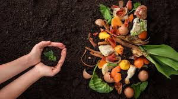

Conheça as iniciativas da Raiz Viva e descubra como participar!
A Raiz Viva acredita que pequenas ações locais podem gerar grandes transformações. Nossos projetos unem sustentabilidade, educação ambiental e inclusão social, promovendo o cuidado com a terra e com as pessoas.
🌱 Horta Comunitária

O projeto “Horta Comunitária” oferece oficinas práticas e gratuitas sobre cultivo sustentável de alimentos. O objetivo é incentivar o consumo consciente e a alimentação saudável dentro das comunidades urbanas. As hortas são cuidadas de forma colaborativa, fortalecendo o vínculo entre os moradores.
🍃 Compostagem Coletiva
Transformamos resíduos orgânicos em adubo natural! O projeto de compostagem coletiva ensina moradores e escolas a reduzir o lixo e reaproveitar recursos, transformando restos de alimentos em fertilizante para as hortas locais.
🌾 Educação Verde

Oficinas, palestras e visitas guiadas para escolas e grupos comunitários sobre preservação ambiental, reciclagem e consumo responsável. O programa estimula o aprendizado prático e o respeito à natureza desde cedo.
💚 Como Doar
Sua contribuição ajuda a manter nossos projetos ativos e acessíveis para toda a comunidade.
Você pode doar mudas, sementes, ferramentas ou recursos financeiros.
Toda doação é revertida em ações diretas para o meio ambiente.
- 🌿 Doação de sementes e mudas
- 🧑🌾 Apoio com voluntariado
- 💰 Contribuições financeiras
Fale Conosco
Endereço: Rua das Palmeiras, 123 - Bairro Verde, Cidade Esperança
Email: contato@raizviva.org
Telefone: (11) 98765-4321